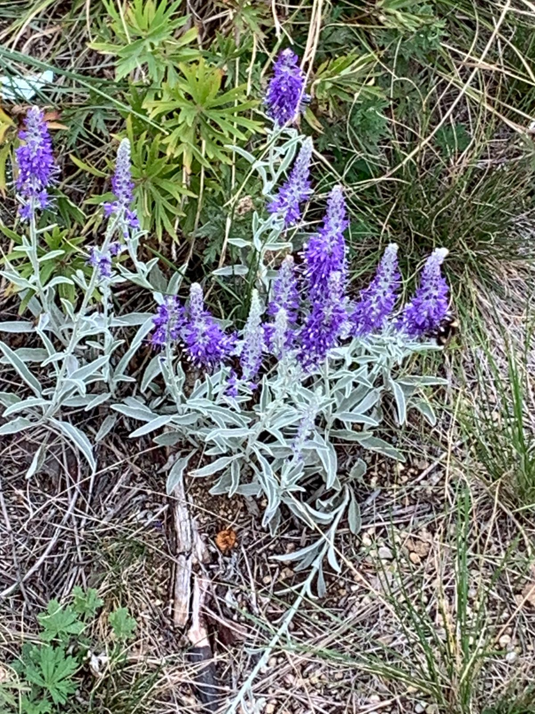

Места распространения: Западная Европа: Румыния (в отдельных районах), Сербия, Болгария, Азия, Монголия (на юге, до окраины Гоби), Китай (восток внутренней Монголии). На территории бывшего СССР от Черновицкой области Украины на восток до низовьев реки Колымы и Анадыря.
Произрастает на каменистых и степных склонах, по скалам, в сухих сосновых и лиственных лесах, иногда на солонцеватых лугах, в субальпийском и альпийском поясах, на известняковых и мергелистых склонах и по сухим руслам.
С лечебной целью нужно использовать стебли, листья и цветки вероники седой. Настой, приготовленный на основе вероники седой, способствует удалению слизистых выделений из дыхательных органов. Такой настой обладает способностями еще и к усилению аппетита, а также стимулирует деятельность различных желез. Кроме этого, вероника седая характеризуется еще и кровоостанавливающим, обезболивающим, противовоспалительным, обезболивающим, антисептическим, противосудорожным, антитоксическим, кровоочистительным, ранозаживляющим и фунгицидным воздействием.
